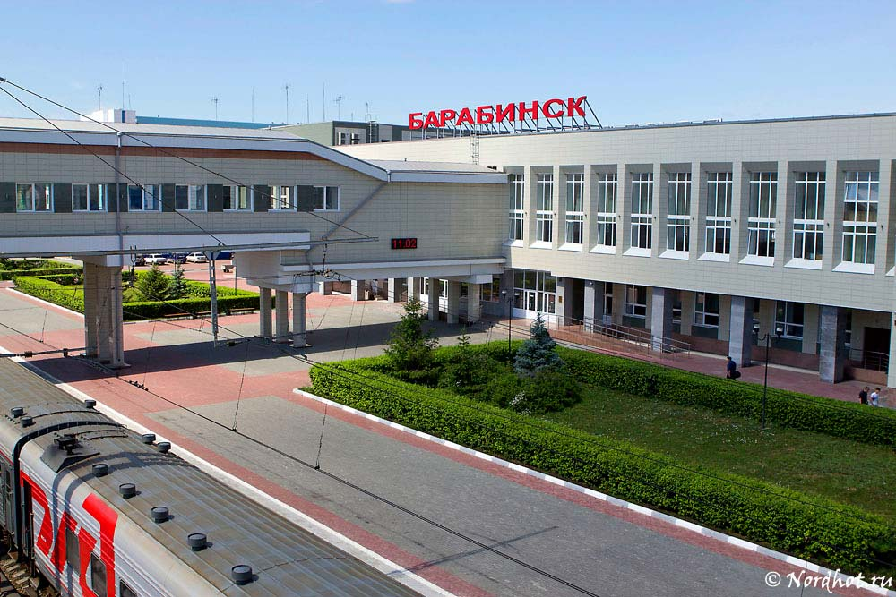

Бара́бинск — город в России, административный центр Барабинского района Новосибирской области. Образует муниципальное образование город Барабинск со статусом городского поселения как единственный населённый пункт в его составе. По традиционному административно-территориальному устройству: город областного значения.
Железнодорожная станция на Транссибирской магистрали. Барабинск является крупным железнодорожным узлом.
Во время строительства Транссибирской магистрали болотистая местность вынудила проложить железную дорогу в стороне от города Каинск. В ближайшем к городу месте была построена железнодорожная станция «Каинск-Томский» (открыта в 1896), при которой возник посёлок служащих железной дороги. Поселение быстро развивалось, и в 1911 году появился проект создания на основе пристанционного посёлка (население которого к тому моменту уже достигло 4 тысяч человек) города — «Алексеевска». На заседании губернского присутствия по крестьянским делам, состоявшемся 18 марта 1911 года, было постановлено «посёлок при станции „Каинск“ признать подлежащим обращению в безуездный город с упрощённым управлением», однако по не вполне понятным причинам изменения статуса не произошло. Лишь к концу 1916 года посёлок при станции «Каинск» стал безуездным городом Томской губернии, названный «Барабинск» по расположению на Барабинской низменности.